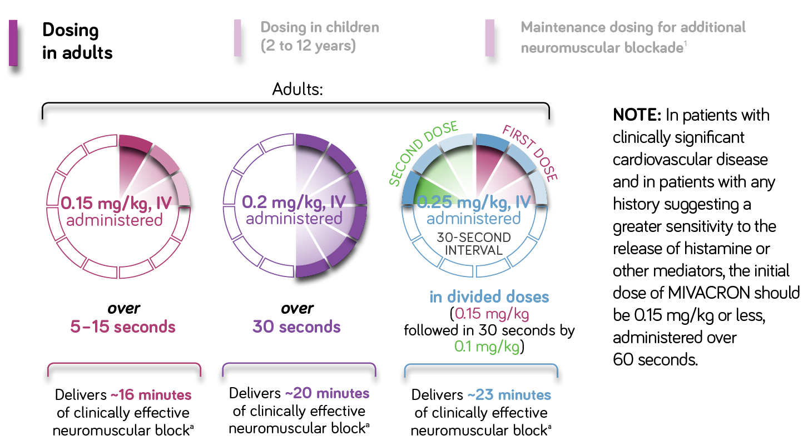

<!DOCTYPE html PUBLIC "-//W3C//DTD XHTML 1.0 Strict//EN" "http://www.w3.org/TR/xhtml1/DTD/xhtml1-strict.dtd">
<html xmlns="http://www.w3.org/1999/xhtml" lang="en" xml:lang="en">
<head>
	<meta http-equiv="X-UA-Compatible" content="IE=edge" />
	<meta http-equiv="Content-Type" content="text/html; charset=UTF-8" />
	<meta name="viewport" content="width=300, initial-scale=1.0, minimum-scale=1.0,maximum-scale=1.0"/>
	<link rel="stylesheet" href="css/styles.css" type="text/css">
	<link rel="stylesheet" href="css/flexibility.css">
	<title>Mivacron | Flexibility</title>
	<script type="text/javascript">
			function overlay() {
				el = document.getElementById("overlay");
				el.style.visibility = (el.style.visibility == "visible") ? "hidden" : "visible";
			}

			function overlay2() {
				el = document.getElementById("overlay2");
				el.style.visibility = (el.style.visibility == "visible") ? "hidden" : "visible";
			}
	</script>
</head>
<body>
	<div class="main-wrap">
		<div class="left-column-2">
			<div class="mivacron-video-1">
				<video src="videos/Flexibility_main.mp4" autoplay="autoplay" type="video/mp4">
			</div>
			<div class="blue-text">
				<p>
					<strong>MIVACRON®</strong> (mivacurium chloride) <strong>injection is easy<br>to titrate to individual patient requirements<sup class="sup-2">1,3</sup></strong>
				</p>
			</div>
			<div class="purple-text">
				<p>
					<strong>MIVACRON provides the flexibility</strong><br>
					of multiple bolus dosing options<sup>1</sup>
				</p>
			</div>
			<p class="sm-text">Recommended initial dosing regimens</p>
			<div class="flex-graphs">
				
				<object class="quarter" type="application/x-shockwave-flash" data="videos/animations/5_Flexibility_Quarter.swf">
					<param name="movie" value="videos/animations/5_Flexibility_Quarter.swf" />
					<param name="quality" value="high" />
					<param name="bgcolor" value="#000" />
					<param name="play" value="true" />
					<param name="loop" value="false" />
					<param name="wmode" value="transparent" />
					<param name="scale" value="showall" />
					<param name="menu" value="false" />
					<param name="devicefont" value="false" />
					<param name="salign" value="" />
					<param name="allowScriptAccess" value="sameDomain" />
				</object>
				<object class="half" type="application/x-shockwave-flash" data="videos/animations/5_Flexibility_Half.swf">
					<param name="movie" value="videos/animations/5_Flexibility_Half.swf" />
					<param name="quality" value="high" />
					<param name="bgcolor" value="#000" />
					<param name="play" value="true" />
					<param name="loop" value="false" />
					<param name="wmode" value="transparent" />
					<param name="scale" value="showall" />
					<param name="menu" value="false" />
					<param name="devicefont" value="false" />
					<param name="salign" value="" />
					<param name="allowScriptAccess" value="sameDomain" />
				</object>
				<object class="full" type="application/x-shockwave-flash" data="videos/animations/5_Flexibility_Full.swf">
					<param name="movie" value="videos/animations/5_Flexibility_Full.swf" />
					<param name="quality" value="high" />
					<param name="bgcolor" value="#000" />
					<param name="play" value="true" />
					<param name="loop" value="true" />
					<param name="wmode" value="transparent" />
					<param name="scale" value="showall" />
					<param name="menu" value="true" />
					<param name="devicefont" value="false" />
					<param name="salign" value="" />
					<param name="allowScriptAccess" value="sameDomain" />
				</object>
			</div>
				<div class="footer-btn">
						<strong><p>Please see accompanying full<br>Prescribing Information.</p></strong>
						<a href="#" onclick="overlay()"></a>
						<a href="#" onclick="overlay2()"></a>
				</div>
			</div>
			<div class="right-column-2-1">
				<p><strong>SAFETY CONSIDERATIONS</strong></p>
				<div class="scrolling-wrap">
					</ul>
						<li><strong>MIVACRON should only be &nbsp;&nbsp;&nbsp;administered intravenously in &nbsp;&nbsp;&nbsp;carefully adjusted dosage by or &nbsp;&nbsp;&nbsp;under the supervision of &nbsp;&nbsp;&nbsp;experienced clinicians who are &nbsp;&nbsp;&nbsp;familiar with the drug’s actions &nbsp;&nbsp;&nbsp;and the possible complications.</strong></li>
						<li><strong>It is recommended that a &nbsp;&nbsp;&nbsp;peripheral nerve stimulator be &nbsp;&nbsp;&nbsp;used during the administration of &nbsp;&nbsp;&nbsp;MIVACRON to monitor drug &nbsp;&nbsp;&nbsp;effect, determine the need for &nbsp;&nbsp;&nbsp;additional drug, and confirm &nbsp;&nbsp;&nbsp;recovery from neuromuscular &nbsp;&nbsp;&nbsp;block.</strong></li>
						<li>Administration of MIVACRON in &nbsp;&nbsp;&nbsp;doses ≤0.15 mg/kg over 5 to 15 &nbsp;&nbsp;&nbsp;seconds is associated with minimal &nbsp;&nbsp;&nbsp;changes in mean arterial blood &nbsp;&nbsp;&nbsp;pressure (MAP) or heart rate (HR). &nbsp;&nbsp;&nbsp;Higher doses ≥0.2 mg/kg may be &nbsp;&nbsp;&nbsp;associated with transient &nbsp;&nbsp;&nbsp;decreases in MAP and increases in &nbsp;&nbsp;&nbsp;HR in some patients.</li>
						<ul class="foot-notes">
							<li class="timing-is-key"><sup>a</sup>Range in clinical trials: 9–38 minutes at 0.15 mg/kg, 10–36 minutes at 0.2 mg/kg, 14–38 minutes at 0.25 mg/kg</li>
							<li class="timing-is-key"><sup>b</sup>Time to 25% spontaneous recovery</li>
							<li class="timing-is-key"><sup>c</sup>For shorter or longer durations of action, smaller or larger maintenance doses may be administered</li>
						</ul>
					</ul>
				</div>
				<div class="timing-is-key-list">
					<ul>
					</ul>
				</div>
				<div class="logo">
					
				</div>
			</div>
		</div>
		<div id="overlay" a href"#" onclick='overlay()'></a>
			<div class="modal">
				<div class="inner-safety-wrap">
					<a href="JavaScript:window.close()"></a>
					<h2>INDICATION<sup>1</sup></h2>
					<p>
						MIVACRON® (mivacurium injection chloride) is a short-acting neuromuscular blocking agent indicated for inpatients and outpatients, as an adjunct to general anesthesia,
						to facilitate tracheal intubation and to provide skeletal muscle relaxation during surgery or mechanical ventilation.
					</p>
					<h2>IMPORTANT SAFETY INFORMATION<sup>1</sup></h2>
					<p>
						<ul>
							<li>MIVACRON is contraindicated in patients with known hypersensitivity to the product and its components.</li>
							<li>Severe anaphylactic reactions to neuromuscular blocking agents, including MIVACRON, have been reported. These reactions have in some cases been life-threatening and fatal. Necessary precautions, including the immediate availability of appropriate emergency treatment, should be taken. Precautions should also be taken in individuals who have had previous anaphylactic reactions to other neuromuscular blocking agents.</li>
							<strong><li>MIVACRON should only be administered intravenously in carefully adjusted dosage by or under the supervision of experienced clinicians who are familiar with the drug’s actions and the possible complications.
							<li>It is recommended that a peripheral nerve stimulator be used during the administration of MIVACRON to monitor drug effect, determine the need for additional drug, and confirm recovery from neuromuscular block.
							<li>MIVACRON has no known effect on consciousness, pain threshold, or cerebration.
							<li>MIVACRON is metabolized by plasma cholinesterase and should be used with great caution, if at all, in patients suspected of being homozygous for the atypical plasma cholinesterase gene due to the possibility of prolonged neuromuscular block.</strong> Plasma cholinesterase activity may be diminished in patients with genetic abnormalities of plasma cholinesterase, pregnancy, liver or kidney disease, malignant tumors, infections, burns, anemia, decompensated heart disease, peptic ulcer, or myxedema. The neuromuscular blocking effect of MIVACRON may be enhanced by drugs that reduce plasma cholinesterase activity (e.g., chronically administered oral contraceptives, glucocorticoids, or certain monoamine oxidase inhibitors) or by drugs that irreversibly inhibit plasma cholinesterase.
							<li>Exercise caution when administering MIVACRON to patients with clinically significant cardiovascular disease, obesity, or any history suggesting sensitivity to the release of histamine (e.g., asthma), as a transient decrease in mean arterial pressure related to histamine release is possible.
							<li>MIVACRON will not counteract the bradycardia produced by many anesthetic agents or by vagal stimulation.
							
							<li>Doses of MIVACRON should be individualized for drugs or conditions causing potentiation of or resistance to neuromuscular block. The following may cause potentiation: neuromuscular diseases, burns, acid-base and/or serum electrolyte abnormalities, cachexia, debilitation, and carcinomatosis. The following may cause resistance: burns, acid-base and/or serum electrolyte abnormalities, and chronic administration of phenytoin or carbamazepine.
							<li>Isoflurane or enflurane administered with nitrous oxide/oxygen to achieve 1.25 MAC decreases the ED50 of MIVACRON. Other drugs which may enhance the neuromuscular blocking action of nondepolarizing agents such as MIVACRON include certain antibiotics (e.g., aminoglycosides, tetracyclines, bacitracin, polymyxins, lincomycin, clindamycin, colistin, and sodium colistimethate), magnesium salts, lithium, local anesthetics, procainamide, quinidine, and succinylcholine.
							<li>Adverse events: >1% of the surgical patients treated with MIVACRON during clinical trials reported flushing (16%); < 1% of patients reported hypotension, tachycardia, bradycardia, cardiac arrhythmia, phlebitis, bronchospasm, wheezing, hypoxemia, rash, urticaria, erythema, injection site reaction, prolonged drug effect, dizziness, or muscle spasms.
						</ul>
					</p>
				</div>
			</div>
		</div>
		<div id="overlay2" a href="#" onclick='overlay2()'></a>
			<div class="modal-2">
				<div class="inner-safety-wrap">
					<a href="JavaScript:window.close()"></a>
					<p><strong>References:</strong></p>
					<ul>
						<li><strong>1.</strong> MIVACRON [package insert]. North Chicago, IL: AbbVie Inc.
						<li><strong>2.</strong> Savarese JJ, Ali HH, Basta SJ, et al. The clinical neuromuscular pharmacology of mivacurium chloride<br>&nbsp;&nbsp;&nbsp;(BW B1090U).
						 A short-acting nondepolarizing ester neuromuscular blocking drug. <i>Anesthesiology.</i> &nbsp;&nbsp;&nbsp;1988;68(5):723-732.
						<li><strong>3.</strong> Apfelbaum JL. Mivacurium chloride administration by infusion. <i>Acta Anaesthesol Scand.</i> 1995;39<br>&nbsp;&nbsp;&nbsp;(suppl s106):55-57.
						<li><strong>4.</strong> NIMBEX [package insert]. North Chicago, IL: AbbVie Inc.
						<li><strong>5.</strong> Rocuronium Bromide Injection [package insert]. Parsippany, NJ: The Medicines Company; 2012.
						<li><strong>6.</strong> Vecuronium Bromide for Injection [package insert]. Schaumburg, IL; Sagent Pharmaceuticals, Inc; 2011.
						<li><strong>7.</strong> Pancuronium Bromide Injection [package insert]. Lake Forest, IL: Hospira, Inc; 2014.
						<li><strong>8.</strong> Atracurium Besylate Injection [package insert]. Deerfield, IL: Baxter Healthcare Corporation; 2006.
						<li><strong>9.</strong> Tang J, Joshi GP, White PF. Comparison of rocuronium and mivacurium to succinylcholine during outpatient
						&nbsp;&nbsp;&nbsp;&nbsp;laparoscopic surgery. <i>Anesth. Analg.</i> 1996;82:994-998.
					</ul>
				</div>
			</div>
		</div>
</body>
</html>
